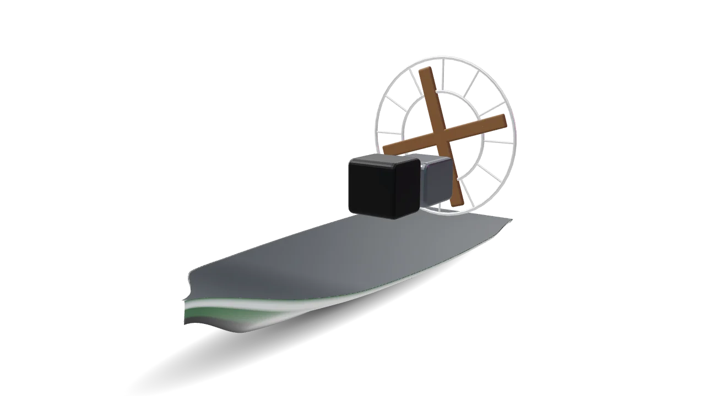

 MaraisGrassrivers
MaraisGrassrivers
Photo du jeu : Rockstar Games. Vue 3D : modèle simplifié créé par le site d'après la photo.
Hydroglisseur (airboat)
- Type
- Bateaux · Marais
- Disponibilité
- Confirmé
- Emplacement
- Grassrivers — Fréquent dans les marais de Grassrivers. Il apparaît dans les bandes-annonces officielles.
Comment l'obtenir
- 1Va dans les marais de Grassrivers.
- 2Cherche les pontons et les cabanes.
- 3Monte à bord.
En savoir plus
Hydroglisseur (airboat) (bateaux, marais) dans GTA 6. Emplacement signalé : Fréquent dans les marais de Grassrivers. Il apparaît dans les bandes-annonces officielles. Statut : confirmé. Ne jamais se fier à un emplacement non vérifié pour une mission chronométrée.